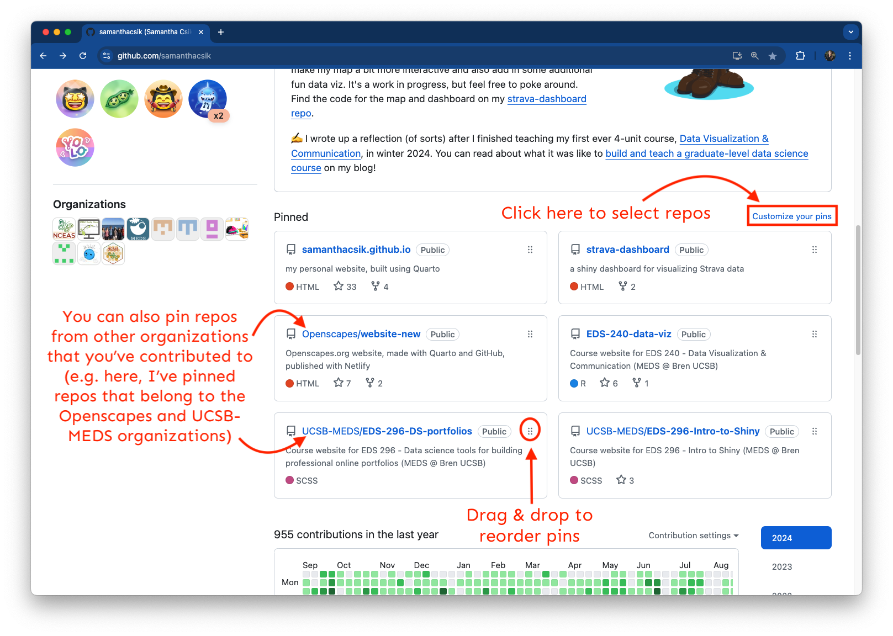
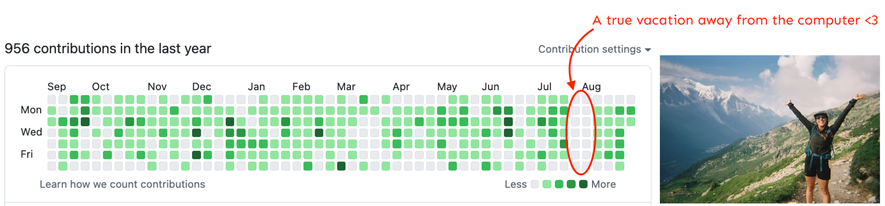
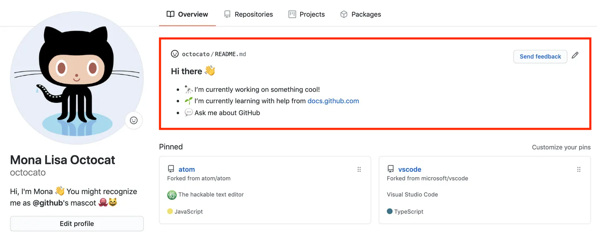
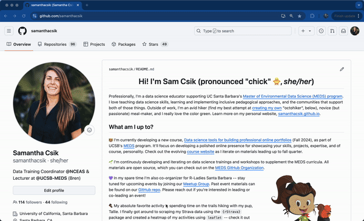

By default, your profile photo is a unique Identicon, which is generated from your GitHub user ID – pretty cool! But you should absolutely update this with your photo.
Creating a Professional GitHub Portfolio
September 23rd,2026
GitHub is a portfolio
Yes, it’s a place to safely preserve versions of our work (in case our computers implode).
But it’s also (often) a place where current and / or potential collaborators and employers can:
explore your code
see your documentation
get a sense of your organizational practices and workflows
understand how you collaborate on projects (and with who)
learn about you as a person who has interests and a personality
Personalize your profile
By default, your profile photo is a unique Identicon, which is generated from your GitHub user ID – pretty cool! But you should absolutely update this with your photo.
To update your profile image and information:
Click on your profile image, which takes you directly to your settings page
Find more information on GitHub Docs
Pin the repos that demonstrate your skills
To pin (up to six) repositories:
A. Navigate to your desired repo > click Pin (top right), or
B. If you already have a pinned repo(s): navigate to you landing page > click Customize your pins > check up to 6 boxes
Find more information on GitHub Docs
Pin the repos that demonstrate your skills

Find more information on GitHub Docs
Contributions show your commits

Troubleshooting or trying to understand your contributions map? Check out this help documentation: Why are my contributions now showing up on my profile?
Add a profile README

See GitHub documentation for more info on profile READMEs
Add a profile README
To add a profile README:
1. Create a new repo and give it the same name as your GitHub username (e.g. my repo is named “samanthacsik”)
2. Make sure your repo is Public and initialize it with a README
3. Click the Edit README button to edit directly in the browser (I find this easier than cloning and editing locally)
See the GitHub documentation for more info on profile READMEs
Explore / adapt from other profile READMEs
See someone with a really cool README? Check out the source code! Navigate to their profile README repo > click on the README.md file > switch to “Code” view:

Always consider web accessibility
Web accessibility means that websites, tools, and technologies are designed and developed so that people with disabilities can use them. More specifically, people can perceive, understand, navigate, and interact with the Web, and contribute to the Web
Improve your GitHub profile page accessibility
A few simple ways to ensure that assistive technology can help users understand and navigate your README:
<img src="image-url.com" alt="This is alt text"># for your title, then the appropriate level-header thereafter (don’t skip levels)* or - for each list item, rather than special characters or emojisThe above pointers come from the github.blog post, 5 tips for making your GitHub profile page accessible.
Importantly, these tips apply for all web pages, not just your GitHub profile README!